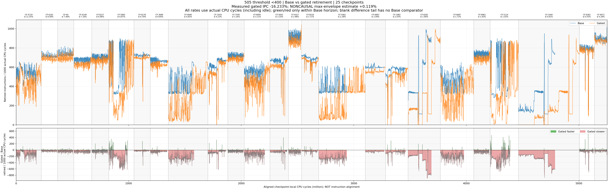
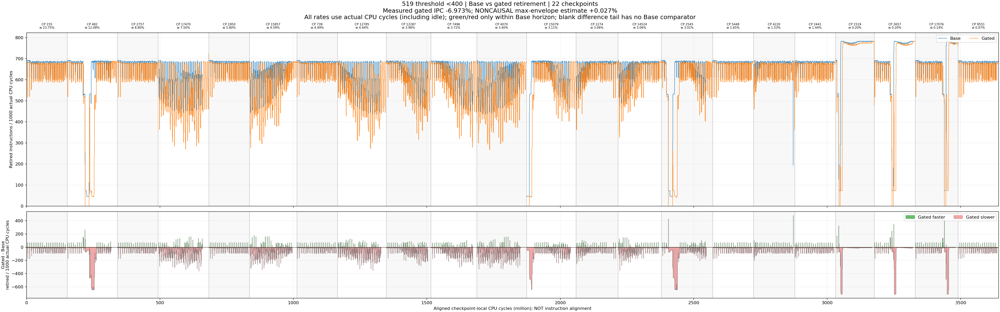
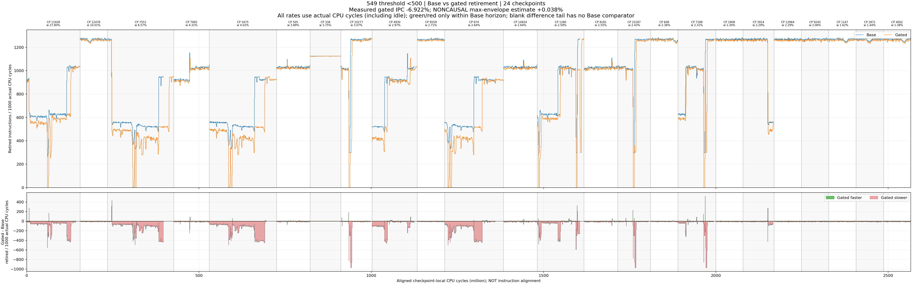

Both panels use retired instructions per 1000 actual CPU cycles (including idle). Same CPU time is NOT same instruction position. Oracle is arithmetic only, not measured switchable-controller IPC. No missing-tail extrapolation.
Measured gated change -16.233%; noncausal max-envelope estimate +0.119%.
PDF
Measured gated change -6.973%; noncausal max-envelope estimate +0.027%.
PDF
Measured gated change -6.922%; noncausal max-envelope estimate +0.038%.
PDF